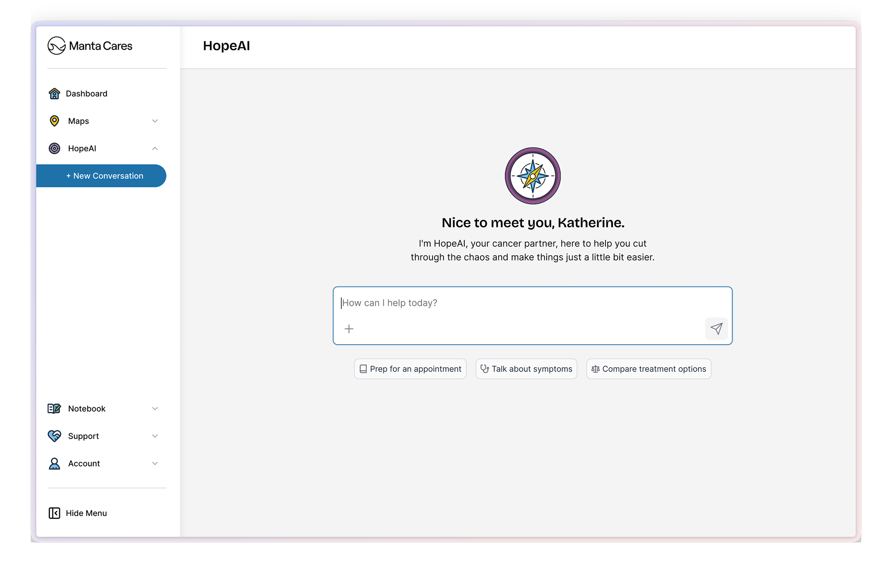
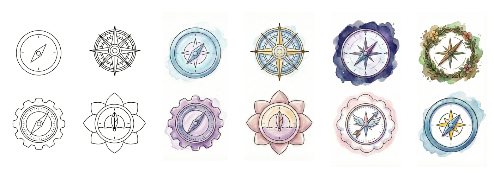
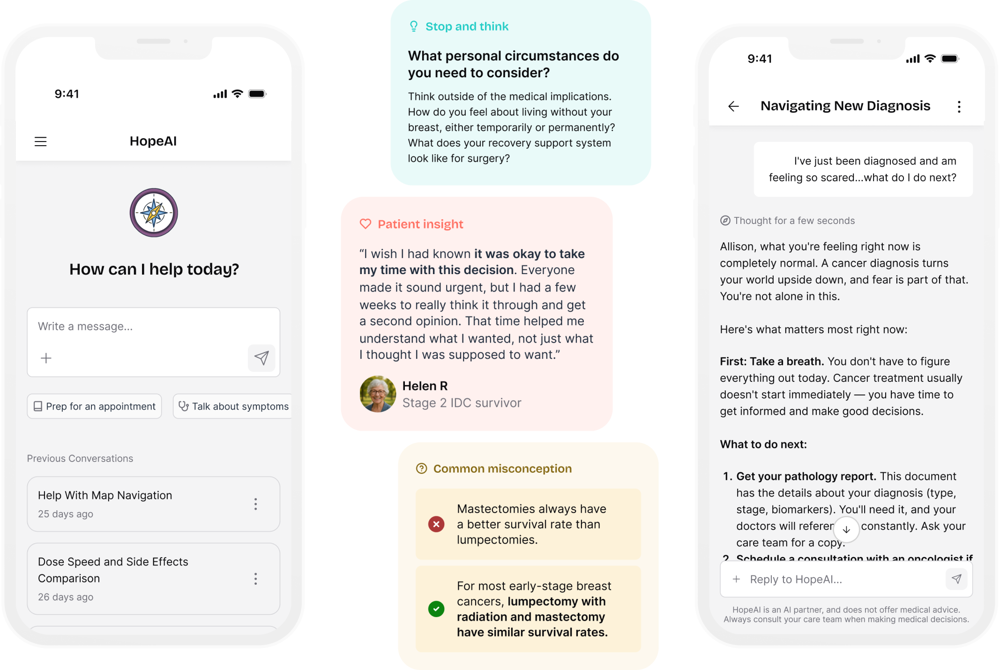
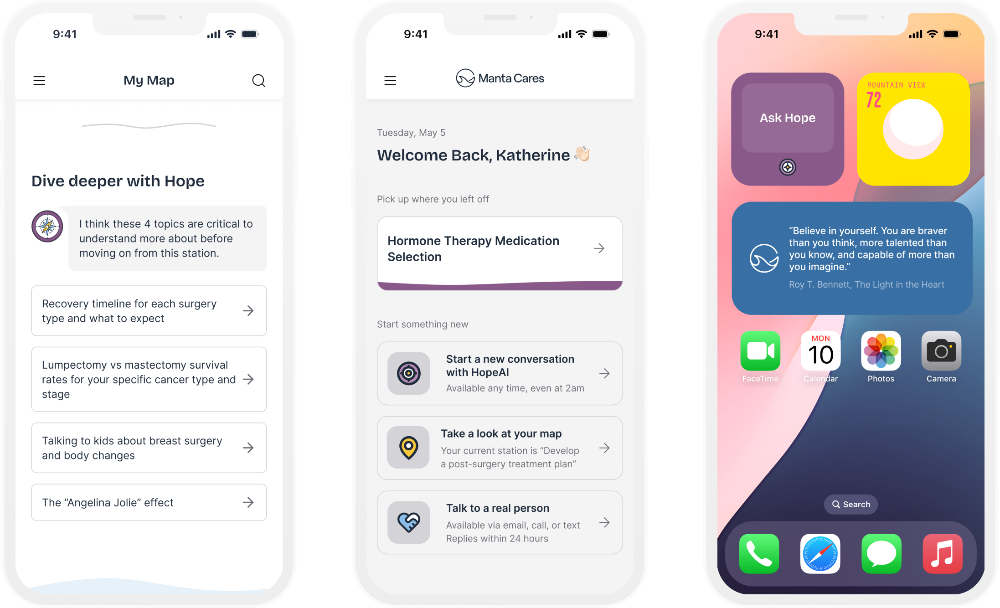

The Problem
I joined Manta Cares as a seed-stage startup in 2025, while they were in the process of building a digital version of their physical cancer planner. The paper planner was built on the idea that you can balance your physical, emotional, and mental well-being during cancer treatment, and it had found a strong foothold in the cancer community.
As we digitized the planner and created our software product though, the mental and emotional side of the product was getting lost in translation. That was the heart and soul of the paper product, the piece that was otherwise missing from most patients' experiences, and it had been taken over by a sea of information and tracking features.
At the same time, we were focusing ourselves as a company around a very specific type of cancer patient: A woman in her sixties with breast cancer, treated at a community hospital, often without a specialized oncologist. She is not getting the care you'd get at a major academic center. She has questions she isn't getting answered in an eight-minute appointment. She is comfortable enough with a phone to text her grandkids and not much further.
For this patient, a conversation wasn't a surface level nice-to-have. It was the only place some of those questions were ever going to get asked.
The Bet
Separately, and less romantically, we were a software company in 2025 grappling with the question every software company was grappling with. Should we put AI in the product? Was there a place for it? Would we be adding it to help patients, or because it was the cool new technology of the moment? I think the honest answer is that both motives were in the room, but as Head of Design I intended to make sure we built what was right for our customers first and foremost.
So the bet I argued for was narrow: HopeAI would own the freeform, emotional, in-between-appointments part of the experience, and nothing that the structured product already did well. It would not diagnose. It would not replace our Cancer Maps. It would not become a general medical search engine.
I advocated for our AI to feel like a companion, not a robot. I drew on conversation and interview data to steer our language away from the technology and toward the outcome, using language like "Prep for an appointment," "Talk about symptoms," and "Compare treatment options." Nobody in our ICP woke up wanting to talk to an AI. They woke up wanting to know whether the pain in their side was normal.
Giving Hope an Identity
Once we decided to embark on the journey of building our AI, we needed to give it an identity. The name came to us quickly, deciding that "Hope" was the best guide to have when navigating cancer. We went back and forth on the details — Hope, Hope Cares, Hope.ai — and settled formally on HopeAI, Hope for short.
We also settled quickly on the visual of a compass, building on the motif of our cancer maps, in one of our brand purples so it's instantly recognizable in a sea of blue UI.
A fun aside — I also explored watercolor styling, and the idea of letting patients choose their own visual style to fit their mood or personality — the same instinct about control, pushed one step further. Neither shipped. Looking back I think that was the right call for launch, but it's still the exploration I'd most like to revive.

Early explorations for Hope's compass mark
Visualizing how Hope would exist in the app was a different story. It needed to be present throughout the product, letting you go deeper on any topic, while staying available for whenever you had a question, felt something you wanted to talk about, or noticed a symptom you needed to log. It needed to feel like a guide who was there when you needed one and out of the way when you'd rather do a task yourself.
That last part wasn't a style preference. We found that maintaining a sense of control is a major motivator for cancer patients — for people whose bodies and calendars have both stopped being theirs, choosing when to be helped is not a small thing. A guide that interrupts is just one more thing happening to you.
So we carefully crafted Hope's story, one where it was there to guide you and help you understand what was next, and wove that throughout our company messaging.
Giving Hope a Voice
Voice and tone mattered as much as the visual identity. To earn trust with cancer patients, and to be distinguishable from the general-purpose chatbots they could already use for free, Hope had to come from a place of real experience.
So we didn't write a persona. We based Hope's voice on the many user interviews we'd done with real cancer patients and survivors, then pressure-tested its responses with the cancer survivors on the Manta Cares team, including our CEO. Hope landed on a kind, understanding register, always starting from "I hear how hard this is, tell me more."
That said, a model tuned to be comforting is a model tuned to agree with you, and in a cancer product agreeableness is a safety problem, not a personality quirk.
So Hope is warm about how it says something and unsentimental about what it says. It will sit with fear for as long as you want, and it will not tell you the scan will probably be fine.
Hope in Product
When you come to Manta Cares you get two modes of interaction: structured and unstructured.
If you want structure, the product works the way it always has. You go to your Map to do a deep dive on research. You log something in your Symptom Tracker. You take notes at your appointment in the Appointment Notebook, then come back and look at your week.
If you want the unstructured version, you talk to Hope. And the reason that works is that Hope isn't a separate island, it's grounded in the content from our Cancer Maps, written by our Clinical Content Team, and your own data. Ask it where you are and it doesn't answer generically:
Hey Katherine, you're currently in the Treatment zone of your Early Stage Hormone Positive Breast Cancer map. You pinned yourself at this station back on December 9th. Where you are right now: This station is about deciding whether to have systemic treatment before surgery (also called neoadjuvant therapy)…
That specificity is the entire differentiator from a general chatbot, and it's why the Map work and the Hope work couldn't be designed separately. I designed two entry points for two different moments.

The full chat experience is where you go when the question is the reason you opened the app. It opens on a simple zero state — How can I help today? — with three starter prompts, an input, and your previous conversations underneath, so returning to a thread from last week is one tap rather than a re-explanation. Thinking states are shown, not hidden, so the wait has a reason attached to it.

The widgets are where you go when the question arrives in the middle of something else — reading a station on your map, deciding what to do next on the dashboard, or even doing other things on your phone — and it lets you ask without losing your place. That's the "out of sight until you need it" principle made structural.
The bet on entry points paid off more clearly than anything else in the project: clicks into a Hope conversation from the dashboard grew from roughly 107 a month at launch to about 630 a month.
Guardrails and Safety
As a medical company we knew we needed real guardrails on HopeAI before it could go anywhere near a customer. Four design decisions carried most of the load here:
- A persistent line sits directly under the input, not buried in onboarding: "HopeAI is an AI partner, and does not offer medical advice. Always consult your doctor or health care team when making medical decisions."
- Hope works from NCCN and ASCO clinical guidelines and Manta's own curated station content rather than the open internet, and we partnered with our in house Clinical Content team for accuracy.
- A human is always one step away. Patients can escalate to a Manta advocate from inside the conversation, and Hope surfaces that route itself when it's uncertain, rather than improvising. Symptom messages are triaged, and anything severe gets a clear "this warrants a call now," out of the conversation and toward a person. Crisis-safety escalation fires whenever a message warrants it.
- Every response can be marked with a thumbs up or down, which was our fastest signal on quality once real patients arrived. Weekly human review of sampled conversations backed it up.
In an AI product, the failure paths are the design. The happy path mostly writes itself.
The Launch
We ran the launch as a staged rollout rather than a single launch day, with an explicit go/no-go gate between each phase — internal dogfooding, then a small beta with members, then a limited soft launch, then general availability. Each gate had the same four questions:
- Are members getting tangible value?
- Is Hope technically performing?
- Is our quality bar holding?
- Can we support the next phase?
What made the gates useful was writing the stop conditions down before we had any results to argue with. Consistent negative feedback, any dangerous medical advice, any compliance issue — those were red flags that stopped the launch, not tradeoffs to be negotiated once there was a date on the calendar.
We ran the launch as a cross-functional effort, coordinating comms across product, engineering, and partnerships, and HopeAI became generally available on February 11, 2026.
The Results
We set a 60% adoption target across product, engineering, and design. We reached about 38% — roughly two-thirds of the way there, and short of where we wanted to land. It isn't a design result either; it was a shared team goal with a lot of hands on it. The shape of the usage told me more than the headline number did.
Depth held. About 13 messages per patient over five months. Half of conversations went past a single question, averaging four exchanges, and the most engaged patients came back for four to fifteen separate conversations. Depth was the number I cared about most, because a support tool that gets used once is a novelty.
The growth was sustained, not a launch spike. Weekly actives went from around 30 to a steady 130–160 and stayed there after the launch attention faded.
Hope worked as connective tissue. 67% of the resources it surfaced pointed back into the product rather than out of it — the Appointment Notebook came up in 82 conversations, the Symptom Tracker in 52 — with the remainder going to vetted nonprofits like CancerCare and Triage Cancer. That was the intent: not a destination, a way through.
Patients uploaded 300+ medical documents into conversations. Handing over your records is a trust threshold most health products never clear. I'd caveat it — this came from a small group of early adopters, so I read it as a signal about how we framed security, not as evidence of adoption.
The change I didn't plan for was cultural. Before Hope, "should we use AI in our product" was a strategy argument nobody at Manta could win, because it was being had in the abstract. Afterward it was a design question with evidence attached: what does this specific patient need, at what moment, and does it fit within the bounds of Hope being an emotional companion and guide.
We came out of this project with a position I still hold — Manta Cares is not an AI-first company, it's a patient-first company, and that decides what gets built.